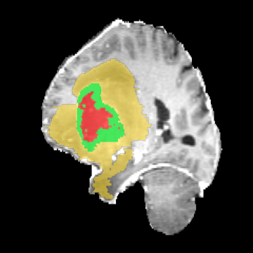

1. CLINICAL WORKSTATION
4-Quadrant Real MRI Multi-Planar Slicer
Interactive Coronal, Sagittal, Axial cross-sections with real patient MRI scans and 3D sub-region segmentation.
● MULTI-PLANAR ORTHOGONAL SLICER
Matrix: 240 × 240 × 155
Voxel: 1.0 × 1.0 × 1.0 mm
Coords: -119.00 × 120.80 × 89.83 mm
Value: 2287
 CORONAL (Y)
CORONAL (Y)
y = 95 / 240

SAGITTAL (X)x = 140 / 240
 AXIAL (Z)
AXIAL (Z)
z = 79 / 155

3D ORTHOGONAL COMPARTMENTS
🟥 NCR
🟨 ED
🟩 ET
Axial (Z-Axis)
z = 79
Coronal (Y-Axis)
y = 95
Sagittal (X-Axis)
x = 140